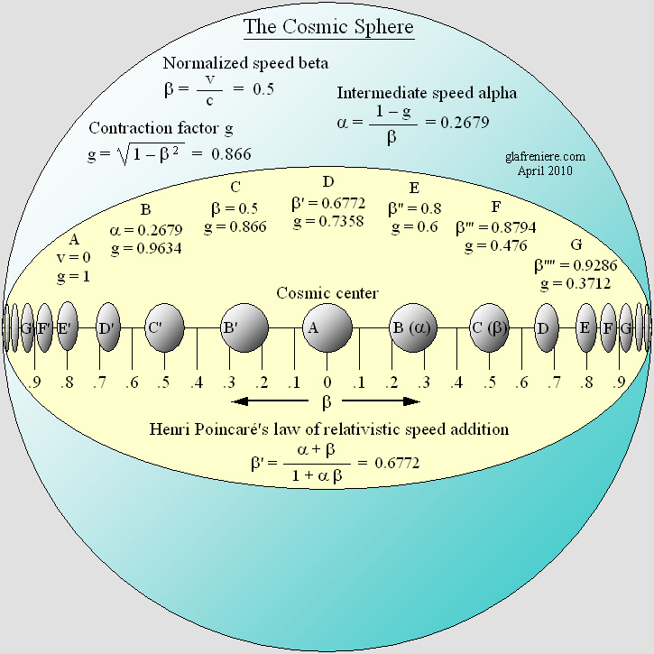
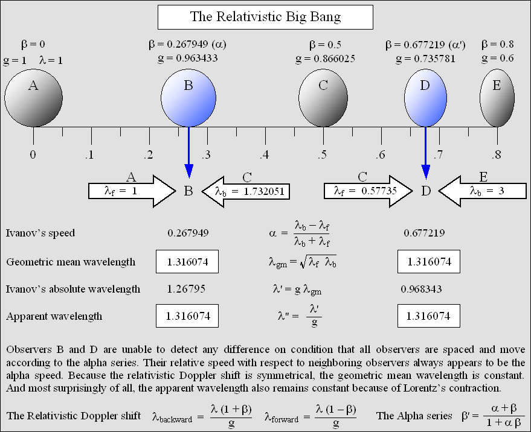
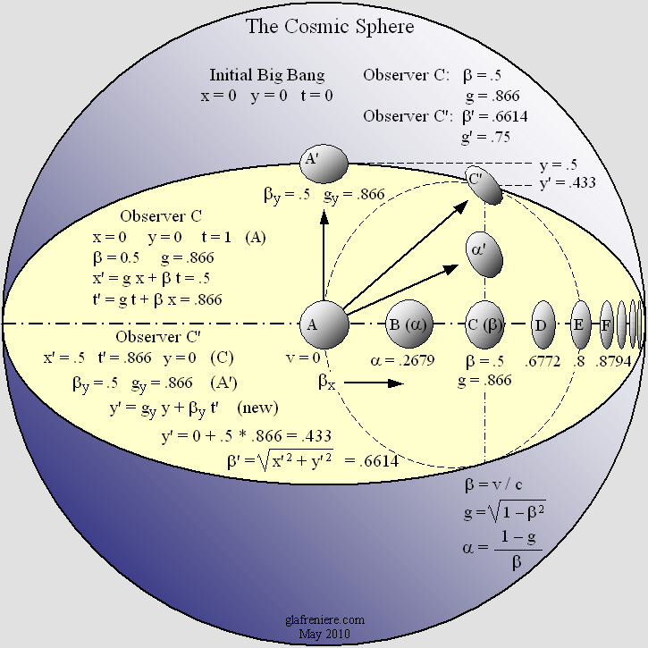
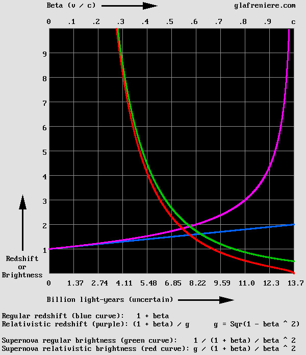

| 00 | 01 | 02 | 03 | 04 | 05 | 06 | 07 | 08 | 09 | 10 | 11| 12 | 13 | 14 | 15 | 16 | 17 | 18 | 19 | 20 | 21 | 22 | 23 | 24 | 25 | 26 | 27 | 28 | 29 | 30 | 31 | 32 | 33 | 34 |
THE RELATIVISTIC BIG BANG
The redshift of remote galaxies is relativistic.
In this image, the constant transverse wavelength according to Lorentz's equations: y' = y; z' = z, is well observable .
In addition to the regular Doppler effect, the frequency slows down according to Lorentz's time equation.
Because of the Lorentz transformations, observer B wrongly considers that he is at the center of the Universe.
In his view, he is stationary so that A and C are apparently moving away from him at the same distance and speed.
RELATIVITY
|
There are many reasons why Relativity holds true. The absence of transverse contraction according to Lorentz's discovery is definitely the most important one. Such a result, which is the main characteristic of the Relativistic Doppler effect, implies a slower pulsation rate according to Lorentz's time equation. The well-known Lorentz-FitzGerald longitudinal contraction and Lorentz's "local time" are also of the utmost importance when it comes to explaining Relativity. The Alpha Transformations. The problem is that the Lorentz Transformations are misleading. They must be applied to a moving system because the x' and t' variables refer to stationary one. Instead of space and time units, the variables should rather be given in wavelength and phase units. In addition, Voigt, Lorentz, Poincare, and Larmor had to elaborate complicated demonstrations using Maxwell's equations. As a matter of fact, Lorentz himself wrote in 1920 that less than 10 physicists in the whole world were able to explain Relativity. Today, it is even worse, and that is why most astronomers no longer rely on elementary Relativity in order to understand the Big Bang and the expansion of the Universe. Fortunately, I could elaborate a more practical equation set which applies to Ivanov's standing waves. Because it may be applied to sound waves with similar results, the use of Maxwell's equations is no longer relevant. I called this equation set the Alpha transformations because it is the very basis of matter mechanics, which is known to be the Wave Mechanics since Louis de Broglie. Although they primarily reflect the behavior of standing waves, their reversed form is surprisingly very similar to the original Lorentz transformations, which apply to matter. The Alpha Transformations.
The Alpha Transformations do reproduce Ivanov's standing waves in a moving environment. But they may also be reproduced using the usual wave addition method because, at least theoretically, it is the superimposition of two waves trains traveling in opposite direction and whose wavelength differ. Ivanov's waves may also be reproduced using my Time Scanner, the Delmotte-Marcotte virtual wave medium, or an acoustic device made out of a microphone and two distant loudspeakers in the presence of wind. Because all five methods yield the same results, the behavior of this fascinating phenomenon is not disputable.
Ivanov's waves.
At first glance, this phenomenon might not look that important. However, it can be shown that it is closely related to the Lorentz Transformations. The node and antinode structure is moving at the "alpha" speed in the direction of the shorter waves so that its intrinsic energy is also moving at the alpha speed. Especially, as it was explained above, this system exhibits a slower pulsation rate and a longitudinal contraction with respect to the wavelength geometrical mean. What's more, because of the presence of a stunning phase wave, a series of clocks regulated according to the local phase would obviously display Lorentz's "local time". Such effects are indeed identical to those of the Lorentz Transformations. The Lorentz Transformations apply to all galaxies in the Universe. The point is that today's astronomers do not believe that remote galaxies are undergoing the Lorentz transformations. In their picture, because the Universe is expanding, galaxies are practically stationary with respect to the local "space fabric". This is known as the "raisin pudding model". Thus, even though we are surely not in the center of the Universe, we are still observing that all galaxies around us are receding according to Hubble's law. This interpretation of the Big Bang is incorrect, though, because Relativity always holds true. It does not tolerate any exception. Astronomers are aware that today's instruments and methods are amazingly accurate, so that relativistic speeds are no longer necessary in order to verify it. Especially, the speed of a moving space ship as measured from another one is verifiable using a Doppler radar. Hence, they must realize that some new crucial experiences are already possible. They should examine more carefully the Relativistic Big Bang hypothesis, simply because it will soon be verified. The expanding Universe is relativistic. That is, very distant and fast galaxies are undergoing the Lorentz transformations. They are emitting radio waves, light, X-rays and gamma rays according to a slower rate of time, and that is why the resulting Doppler effect is relativistic. Rearward relativistic Doppler: lambda' = lambda * (1 + beta) / g Relativistic redshift: R = (1 + beta) / g According to Relativity, even the most distant galaxies cannot reach the speed of light. Hence, a redshift of 2 or more cannot indicate that the speed of a galaxy is faster than the speed of light. For this reason, it is not acceptable to deal with a so-called "z" redshift, which is given by the wavelength ratio minus 1 in order to indicate the beta (or v / c) speed. Using the more acceptable redshift R shown above, the galaxy normalized speed is given by: beta = 2 / ((1 / R)^2 + 1) – 1 The most distant galaxies are also severely contracted according to the Lorentz-Fitzgerald contraction. This includes distances between them. As a result, the cosmic sphere seems to contain far more galaxies near its limits than in its central area. In the graphics below, seven galaxies (A to G) are placed and transformed according to the Lorentz transformations. This way, any of them may be considered to be stationary in the center of the universe, and the two neighboring galaxies seem to move away at the same distance and at the same alpha speed.
 The Cosmic Sphere. In this example, the beta speed is 0.5 for C and the alpha intermediate speed is 0.2679 for B. As seen from the center A, the more the galaxies are distant and fast, the more they are contracted. But surprisingly, observer B also observes that he is stationary and that all galaxies are moving away from him. This happens because he is moving towards the waves incoming from the right. The result of this is that his perception of the time (his "local time") is distorted. The Time Scanner is capable of reproducing the equivalent distortion. Big_Bang_02_Doppler_Lorentz_Scan.avi The FreeBasic program: Big_Bang_02_Doppler_Lorentz_Scan.bas
The Alpha suite. Most of the time, the Doppler effect is the cause of the forward vs. rearward wavelength difference. Christian Doppler himself pointed out in 1842 that this difference is unnoticeable if the observer is moving along with the transmitter. In this case, Ivanov's waves are moving at the same speed. The video below shows that this fundamental result is consistent with both the acoustic and relativistic Doppler effect. However, in the case of the relativistic Doppler effect, the slower frequency must be taken into account, and the result of this is that the Doppler effect seems to be relative. It is no longer possible to deduce one's absolute speed from it because of the amazing symmetry. This may easily be demonstrated using an "Alpha Suite", that is, any suite based on a constant alpha reference speed. The suite must be calculated according to Poincare's law of speed addition: beta = (alpha + alpha) / (1 + alpha * alpha) beta' = (alpha + beta) / (1 + alpha * beta) beta'' = (alpha + beta') / (1 + alpha * beta') For example, let's suppose that observer A below is stationary and that observer C is moving at beta = 0.5 times the speed of light. According to Poincare, the observer B must move at an intermediate alpha speed in order to see both A and C moving away from him at the same alpha speed. The alpha speed is given by:
Or more simply: alpha = (1 – g) / beta alpha = (1 – 0.866025) / 0.5 = 0.267949 And inversely: beta = (alpha + alpha) / (1 + alpha * alpha) = 0.5
Thus, in the graphics below, A is stationary, B is moving at 0.267949 c and C is moving at 0.5 c. This situation is remarkable because B may consider that A and C are moving away from him at the alpha speed. But the situation of D is even more remarkable because his observations are exactly identical to those of B. This is the most stunning effect of Relativity: any speed seems to be relative so that the absolute speed cannot be recorded any more.
 This "theorem" is based on Ivanov's waves. It shows that the situation of observers B and D is equivalent. Their absolute motion is undetectable because they are recording the same data. The redshift from their two neighbors seems identical: R = 1.316074 times the regular wavelength. The measured redshift apparently indicates the alpha speed = 2 / ((1 / 1.316074)^2 + 1) – 1 = 0.267949 This occurs because the measures of D are far more distorted as a result of the Lorentz-FitzGerald contraction. The animation below proves that, using the Hertz test, observer B measures identical wavelengths from A and C.
The Lorentz Tri-Dimensional Transformations. On a transverse axis, the expansion of the Universe produces a contraction which is incompatible with Lorentz's y' = y; z' = z equations. It is negligible at any scale smaller than that of our galaxy, yet it is unavoidable here because the goal is to show how the Universe is expanding.
 At the scale of the Universe, the Lorentz Transformations produce a transverse contraction. On April 30, 2010, I released a tri-dimensional version of the Lorentz Transformations (see below). Using
this equation set, it is now possible to show the "Big Bang"
and the expansion of the Universe: The program: Big_Bang_01_Relativistic.bas
It turns out that the x axis is a preferred one, where Lorentz's t' phase (or time) applies and where the Lorentz-FitzGerald contraction takes place using Lorentz's original contraction factor. The y axis is involving a secondary level of transformation as seen by the observer moving on the x axis. Similarly, the transformation on the z axis is a tertiary one as seen by an observer moving on both x and y axes. Thus, the all-azimuth transformations shown below are asymmetric. Fortunately, it is possible to bypass this constraint by accelerating the speed according to beta[y] / g[x] or beta[z] / g[y] in order to obtain symmetrical results, for example if the goal is to obtain a 45° direction. Of course, it is also possible to elaborate a different equation set in order to obtain symmetrical results, but this option proves to be far more complicated. It also leads to speeds faster than light, hence inconsistent with Relativity. On the positive side, this equation set is consistent with Poincare's law of speed addition. For instance, a beta speed of 0.9999 on all three x, y and z axes still produces a resulting beta[xyz] speed slower than the speed of light. This leads to a new law of speed composition: gxyz = gx * gy * gz . Below are the Lorentz all-Azimuth Transformations:
The Lorentz all-Azimuth tri-Dimensional Transformations. The formula: gxyz = gx * gy * gz introduces a new law of relativistic speed composition. Henri Poincare is the author of a similar law on relativistic speed addition.
In May and June 2009, I worked hard in order to re-arrange and simplify this equation set. Now, it is quite nice. Even the de Broglie's phase wave is reproducible using it. Using the Delmotte-Marcotte wave medium, I could check that those transformations work perfectly, especially when it comes to reproducing the relativistic Doppler effect. I also succeeded in transforming Lorentz himself. Now, that's what I call the Lorentz "transformations"! Lorentz_3D_Transformations.mkv The contraction especially is well visible. The goal was actually to show that the phase wave is linked to the contraction (an ellipse is needed instead of a circle). This way, the phase wave and the relativistic Doppler effect are perfectly superimposed. The all-azimuth transformations are a must in order to transform simultaneously several structures or wave emitters whose direction is not the same. In the animations suggested here, one may check that the transformations are perfectly achieved. What's even better is their effect on a transmitter. In addition to the contraction, the pulsation phase is slowed down and it is modified in order to mach the phase wave. It should be emphasized that the Time Scanner reproduces the same effects using only the phase wave and the alpha speed. According to the animations below, the phase wave may be interpreted in different ways. I very carefully reproduced the relativistic Doppler effect near to the center of the transmitter. After all, it is the main purpose of the Lorentz Transformations. Similarly, below is the most recent representation of my moving electron, which was obtained by means of the all-azimuth transformations. It was firstly shown in my 2002 book: "Matter is made of waves". Here, it is moving along a diagonal. Mr. Jocelyn Marcotte pointed out that its structure may be given by the sinus cardinalis: y = sin(x) / x. Doppler_Moving_Electron_Diagonal.avi Doppler_Moving_Electron_Diagonal.bas All this indicates that any moving material system is undergoing three fundamental transformations: 1 – The system experiences a contraction on the displacement axis according to Lorentz's factor. 2 – Events in this system are occurring at a slower rate of time according to Lorentz's factor. 3 – Events at the rear of this system are occurring sooner according to Lorentz's time equation.
The Universe is likely to be expanding regularly. It was shown above that any expansion phenomenon must be relativistic. It is not possible to measure some consistent data in the presence of three A, B, C space ships regularly spaced without respecting the alpha speed of the central one. For example, speeds such as 0.0000001 c for A, 0.0000002 c for B and 0.0000003 c for C would definitely lead to an asymmetry because their initial equal distance will soon become unequal and measurable as such by both A and C. In short, the relativistic expansion is verifiable and measurable. What's more, it is consistent with Relativity. Thus, I am of an opinion that rejecting the relativistic hypothesis is highly imprudent, if not illogic. That is why Mr. Saul Perlmutter cannot deduce from his discovery that the Universe is expanding in an accelerated manner. It was even more imprudent to put forward the "dark energy" hypothesis in order to explain it. I do recognize the importance of his discovery, but it must definitely be interpreted as a confirmation that the expansion of the Universe is relativistic. The curves below are correct on condition that the Hubble constant is really constant, which is still to be demonstrated. So, let's suppose it is constant. In addition, one must realize that, if the expansion of the Universe is relativistic, the speed of light is unattainable. This is why the purple curve strongly deviates from the blue one when it approaches c. But surprisingly, although the well-known regular brightness (green curve) of a supernova differs if it is relativistic (red curve), the difference is rather small. 
The important point is that the difference matches Mr. Perlmutter's observations. This result indicates that the expansion of the Universe is relativistic. It doesn't indicate that the expansion is accelerated. I am quite sure that this trend will be confirmed in many years from now, as more and more observations on very distant and fast supernovae will be available.
The Expansion of the Aether. The aether itself may be expanding as a result of its elasticity. In this case, one should admit that very distant galaxies may be receding much faster than the speed of light. What's more, considering that they should be stationary with respect to the local aether, the Lorentz Transformations would not apply. And finally, because all galaxies would be accelerated thanks to the aether elasticity, this property would definitely account for a so-called "dark energy". This picture is strangely similar to what astronomers believe today. However, such an expansion must be still compatible with Relativity. Otherwise, it would be measurable in an absolute way so that the center of the Universe would become verifiable. The answer to this ultimate question is well beyond our reach today because there are so many variables and hypotheses. Especially, a severe redshift is difficult to measure because the radiation energy is dimming proportionally. Considering the distance, even X-rays are becoming very faint if they are shifted into infrared. Considering that they are moving at nearly the speed of light, fastest galaxies are supposed to be seen about 13.5 billion light-years away. But today, because the light had to travel during 13.5 billion years, they may be actually about 27 billion light-years away. One should nevertheless be aware that such a distortion as a result of the light traveling delay must imperatively be perceived as a space contraction which partially accounts for the Lorentz-FitzGerald contraction. In addition, though, because the aether is expanding at the speed of light, the light emitted toward us by those galaxies is no longer capable of reaching our telescopes. On the one hand, galaxies receding faster than the speed of light would become totally invisible. On the other hand, galaxies receding at nearly the speed of light would exhibit a severe redshift because, in this area, the speed of light with respect to us is very slow. Hence, their actual distance would be far greater than 27 billion light-years away. That is why the result is finally comparable to that of a pure relativistic Big Bang, albeit it is not perfectly identical. All this is highly hypothetical. However, we are still capable of building larger telescopes. I strongly think that, in the future, and whatever the direction, we will observe more and more galaxies very near to the limits of the Cosmic Sphere. This will definitely indicate that the center of the Universe is unverifiable and that the expansion of the Universe is – or seems – relativistic. |
| 00 | 01 | 02 | 03 | 04 | 05 | 06 | 07 | 08 | 09 | 10 | 11| 12 | 13 | 14 | 15 | 16 | 17 | 18 | 19 | 20 | 21 | 22 | 23 | 24 | 25 | 26 | 27 | 28 | 29 | 30 | 31 | 32 | 33 | 34 |
|
|
Gabriel LaFreniere, Bois-des-Filion in Québec. Email: Please read this notice. On the Internet since September 2002. Last update March 11, 2011. |